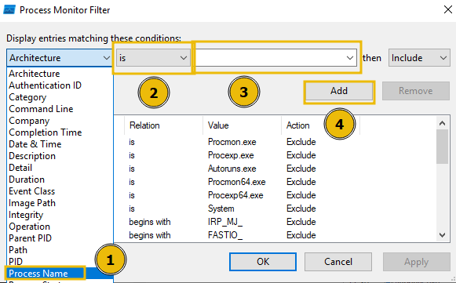

Malware analysis is the process of examining a malicious file to understand its functionality, operation, and methods for defence against it. By analysing a malicious file or application, we can see exactly how it operates, and therefore, know how to prevent it. For example, could the malicious file communicate with an attacker's server? We can block that server.
Could the malicious file leave traces on the machine? We can use these to determine if the malware has ever infected another device. Instead of fearing malware, we can take a proactive approach by translating technical findings into practical defensive measures and understanding how the malware fits into an attacker's techniques.
There are two main branches of malware analysis: static and dynamic. Static analysis focuses on inspecting a file without executing it, whereas dynamic analysis involves execution. We will come to these shortly.
Sandboxes
In cyber security, sandboxes are used to execute potentially dangerous code. Think of this as disposable digital play-pens. These sandboxes are safe, isolated environments where potentially malicious applications can perform their actions without risking sensitive data or impacting other systems.
The use of sandboxes is part of the golden rule in malware analysis: never run dangerous applications on devices you care about.
Most of the time, sandboxes present themselves as lab machines. Lab machines are a popular choice for sandboxing because you can control how the system operates and benefit from features such as snapshotting, which allows you to create and restore the machine to various stages of its status.
To reiterate, it is imperative to understand that potentially malicious code and applications should only be run in a safe, isolated environment. From now on, this room will refer to malicious code and applications as samples.
With these fundamentals covered, let's move on to the practical section of today's room. The following will demonstrate a sample; you must apply these techniques to the HopHelper.exe file presented to you within the "HopHelper" folder on the Desktop of the practical VM.
As we alluded to previously in this room, we use static analysis to gather information about a sample without executing it and digging deep.
Static analysis can be a quick and effective way to understand how the sample may operate, as well as how it can be identified. Some of the information that can be gathered from static analysis has been included in the table below:
| Information | Explanation | Example |
|---|---|---|
| Checksums | These checksums are used within cyber security to track and catalogue files and executables. For example, you can Google the checksum to see if this has been identified before. | a93f7e8c4d21b19f2e12f09a5c33e48a |
| Strings | "Strings" are sequences of readable characters within an executable. This could be, for example, IP addresses, URLs, commands, or even passwords! | 138.62.51.186 |
| Imports | "Imports" are a list of libraries and functions that the application depends upon. For example, rather than building everything from scratch, applications will use operating system functions and libraries to interact with the OS. These are useful, especially in Windows, as they allow you to see how the application interacts with the system. | CreateFileW This library is used to create a file on a Windows system. |
| Resources | "Resources" contain data such as the icon that is displayed to the user. This is useful to examine, especially since malware might use a Word document icon to trick the user. Additionally, malware itself has been known to hide in this section! | N/A |
However, it's important to note that regardless of how a sample may appear or function, we don't truly know until it's executed. Attackers use techniques such as obfuscation to obscure how the sample appears, primarily to evade anti-viruses but also to evade a curious analyst.
Demonstrating PeStudio
This section of the room will demonstrate using PeStudio on an example called downloader.exe. Please note that the information you see will be from this demonstration sample. The sample you will be analysing will be different, but the techniques will still apply.
Please note, it is imperative that you do not launch the HopHelper.exe executable yet.
First, we will use PeStudio to gather information about the executable.
Executive Summary:1. Launch PeStudio
First, we will launch PeStudio and load the executable into it. The shortcut for this has been placed on the Desktop of your analyst machine. You can drag and drop the executable into the PeStudio window, or load it by selecting File -> Open File from the toolbar. PeStudio will display some information about the executable.
For us, at this stage, the file > sha256 property within the table is of interest. This value is a checksum, which is a unique identifier for the executable. We can keep a note of this SHA256 as threat intelligence.
Now, proceed to do this on the sample, HopHelper.exe, provided to you on the analyst machine to answer question 1.
As a reminder, the HopHelper.exe sample can be found in the "HopHelper" folder on the Desktop.
Next, we will proceed with reviewing the "Strings" of the executable. You can do this by clicking on the "strings" indicator on the left pane of PeStudio.
In the context of malware analysis, strings are sequences of readable characters present within an executable. This could be, for example, IP addresses, URLs, commands, or even passwords! As a malware analyst, it's great to have a look at these, as these could reveal the attacker's command infrastructure, which we can use for our defences.
Now, proceed to review the strings on the sample, HopHelper.exe, provided to you on the analyst machine to answer question 2.
Please note that it may take a few minutes for the "strings" to calculate.
Great! This concludes the static analysis portion of the practical. There's so much more to uncover using static analysis. Feel free to explore if you'd like. Let's proceed to the dynamic analysis below.
This section of the room provides a brief introduction to dynamic analysis. As you recall, dynamic analysis involves executing the malicious sample to identify its behaviours and how it interacts with the operating system.
Regshot
Regshot is a widely used utility, especially when analysing malware on Windows. It works by creating two "snapshots" of the registry—one before the malware is run and another afterwards. The results are then compared to identify any changes.
Malware aims to establish persistence, meaning it seeks to run as soon as the device is switched on. A common technique for malware is to add a Run key into the registry, which is frequently used to specify which applications are automatically executed when the device is powered on.
Before executing the malicious sample, HopHelper.exe, let's create a snapshot of our registry as it currently is, so we can compare the difference once the sample has been executed.
Let's load up Regshot and create a capture of the registry as it currently exists. The shortcut to this has also been placed on the Desktop of the analyst machine.
First, change the output directory of the capture to the user's Desktop using the box with three dots in the "Output path" section.
Then, once set, let's create our first snapshot. Press 1st shot and then Shot on the dropdown. Please note that this may take a few minutes to complete.
Now that we have taken a snapshot of the registry, you should proceed with executing the HopHelper.exe sample and take another snapshot. We will then compare the difference.
For you, this is the HopHelper.exe executable located in the "HopHelper" folder on your Desktop.
Psst...now that you have executed the sample, you might see that some strange things have happened.
Once we have executed our sample, let's return to Regshot and capture our second snapshot, using the same procedure as above. Click on the 2nd shot button and press Shot in the dropdown. Regshot is now capturing the registry again, and outputting the differences to a file.
And now, after a few seconds, let's press the Compare button that appears.
We can search for the executable within the log that opens up.
ProcMon
Next, we will explore using ProcMon (Process Monitor) from the Sysinternals suite to investigate today's sample. Proccess Monitor is used to monitor and investigate how processes are interacting with the Windows operating system. It is a powerful tool that allows us to see exactly what a process is doing. For example, reading and writing registry keys, searching for files, or creating network connections.
Open Process Monitor (ProcMon), the shortcut for this has been placed on the Desktop of the analyst machine. Process Monitor will automatically start capturing events of various processes on the system.
Now, execute the sample HopHelper.exe again and return to Process Monitor to see how it interacts with the operating system.
You will see a lot of information here. Do not worry, we will come onto how to filter this shortly.
After allowing a minute to pass, ensuring the sample has fully executed, we will now stop capturing. To stop capturing more events, click on the Play button in the toolbar of Process Monitor.
As you can see, there is a lot of information to scroll through here, with the most recent events at the bottom. Here we can see how various system processes are interacting with Windows. Nearly all of it, we don't care about.
Remember, the task content is demonstrating using Process Monitor for the demonstration sample downloader.exe.
You will need to follow along, but doing so for the HopHelper.exe.
Let's apply some filters. Afterall, for this demonstration, we only care about the downloader.exe sample. To do so, click on the Filter button, and then Filter within the dropdown.
A new window will open.
Here we can create some filters to remove some of the noise that we don't care about. Because we want to only look at this downloader.exe sample for this demonstration, we can apply a filter like so:

Once done, returning to the main Process Monitor window, we can already see the filter has worked.
Now it is much easier to investigate how the process is interacting with the operating system. Here are some Operations that may be of interest to us:
However, as you can see, there is still a lot of information. We can further apply filters to look for specific things that we want to investigate, such as these aforementioned Operations.
To do so, return to the Filter heading and create the filter we want to apply. For example, we can filter by Operations. Let's do so below, filtering for any TCP Operation:
We will now see all Operations that include TCP. Remember, you can remove the filters you've previously applied by pressing the filter in the Filter list, and pressing Remove:
Or, alternatively, if you wish to start over, you can simply press the Reset Filter option when clicking on the Filter heading.